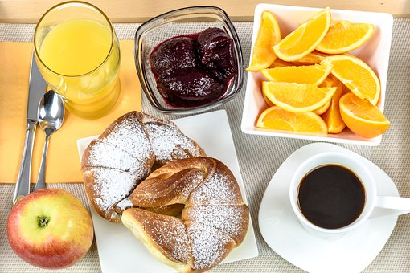
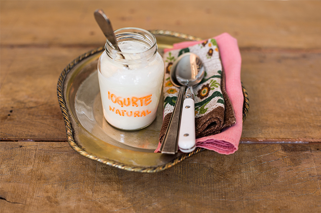
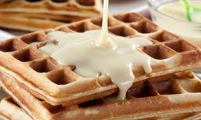
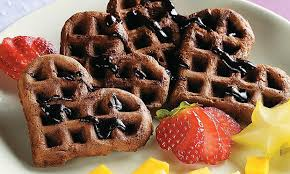

Bolo de Cenoura com Cobertura
INGREDIENTES- MASSA:
1/2 xícara (chá) de óleo;
3 cenouras médias raladas.
4 ovos;
2 xícaras (chá) de açúcar;
2 e 1/2 xícaras (chá) de farinha de trigo;
1 colher (sopa) de fermento em pó.
MODO DE PREPARO - MASSA:
Em um liquidificador, adicione a cenoura, os ovos e o óleo, depois misture
Acrescente o açúcar e bata novamente por 5 minutos.
Em uma tigela ou na batedeira, adicione a farinha de trigo e depois misture novamente.
Acrescente o fermento e misture lentamente com uma colher.
Asse em um forno preaquecido a 180° C por aproximadamente 40 minutos.
Iogurte Tipo Natural Caseiro
INGREDIENTES
1 litro de leite integral tipo A;
1 pote de iogurte natural sem açúcar (170 g);
MODO DE PREPARO
Se quiser fazer seu próprio iogurte, aqueça 1 litro de leite a 85°c e deixe que esfrie
até 43°c.
Misture com 100 g de iogurte natural pronto e mexa até dissolver ou bata no liquidificador.
Cubra com um prato, embrulhe em duas ou três toalhas e coloque em um lugar protegido.
Deixe descansar por 5 horas, desembrulhe, cubra com filme plástico e leve à geladeira.
No momento de usar, separe uma parte desse iogurte e guarde para o preparo do próximo.

Salada de Frutas: Creme Especial
INGREDIENTES
1 lata de leite condensado;
3 colheres (sopa) de suco de limão;
200 iogurte natural 1 raspa de limão ;
*frutas de sua preferência picadas.
MODO DE PREPARO
No liquidificador, bata o leite condensado com o suco de limão durante 3 minutos
ou até ficar encorpado.
Acrescente o iogurte, as raspas de limão e bata até incorporar ao creme.
Distribua as frutas em taças e cubra com o creme.
Leve para gelar.
Torrada com Leite Condensado
INGREDIENTES
1 pacote de pão de forma;
Margarina;
1 lata de leite condensado.
MODO DE PREPARO
Corte o pão de forma ao meio ou em triângulo.
Passe margarina na parte de baixo e passe leite condensado na parte de cima.
Coloque para assar em forno quente com a parte da margarina para baixo e a do leite condensado para cima.
Deixe assar uns 15 minutos, até dourar por baixo e ferver o leite condensado em cima.

Waffle de Chocolate com Frutas
INGREDIENTES
1 1/2 xícara (chá) de farinha de trigo;
1 ovo e 1 xícara (chá) de leite;
4 1/2 colheres (sopa) de manteiga amolecida;
1 colher (sopa) de fermento em pó;
2 colheres (sopa) de chocolate em pó;
1 colher (sopa) de açúcar;
150 g de chocolate ao leite;
Frutas picadas a gosto.
MODO DE PREPARO
No liquidificador, bata a farinha de trigo, o ovo, 1/2 xícara (chá) de leite,
1 1/2 colher (sopa) da manteiga amolecida, o fermento, o chocolate em pó e o açúcar.
Com a massa, faça os waffles em aparelho próprio para este fim.
Prepare a calda: derreta o chocolate ao leite conforme as instruções da embalagem.
Aqueça 1/2 xícara (chá) de leite e derreta 3 colheres (sopa) de manteiga derretida.
Misture-os ao chocolate.
Sirva os waffles com a calda e as frutas picadas.
